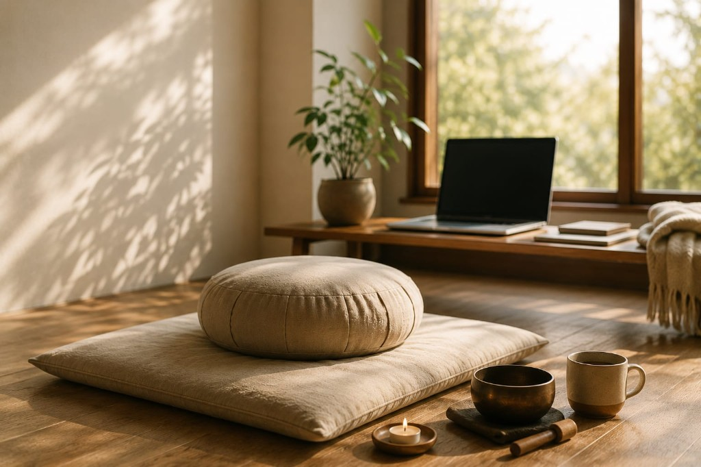

Meditación semanal en línea
Cada lunes nos sentamos juntos, desde donde cada quien esté. Una hora para detenerse, respirar y volver a lo esencial.

Cuándo y cómo participar
Para acompañar a quien llega por primera vez, el acceso se coordina por WhatsApp. Escríbenos y te compartimos el enlace de la sesión.
Para quién es
Para cualquier persona que quiera practicar, conozca o no el Buddhismo. No se requiere experiencia previa, ni pertenecer a la comunidad, ni haber meditado antes.
Vienen personas que llevan años practicando y personas que se sientan por primera vez. La sesión está pensada para que ambas encuentren su lugar.
Cómo transcurre la sesión
La práctica es guiada de principio a fin. No hay que saber qué hacer de antemano: se indica cómo sentarse, cómo acompañar la respiración y qué hacer cuando la mente se dispersa —que se dispersa siempre, y no es un error.
Hay un momento de silencio compartido y espacio para preguntas al final, si alguien quiere hacerlas. Nadie está obligado a hablar ni a encender la cámara.
Si nunca has meditado
Basta con un lugar donde puedas estar tranquilo el rato que dure la sesión. Puedes sentarte en una silla, en un cojín o en el suelo: no hace falta ninguna postura particular ni ningún objeto.
Tampoco hace falta llegar «preparado». La meditación no es dejar la mente en blanco ni conseguir un estado especial: es aprender a estar presente con lo que hay, y eso se practica, no se logra de una vez.
En qué tradición se inscribe
Nuestra práctica proviene del Buddhismo Chan y de la Tierra Pura, dentro de la tradición Mahāyāna. La meditación semanal es su puerta más sencilla: no exige adherirse a nada ni asumir compromiso alguno.
Quien quiera conocer de dónde viene esta práctica puede leer sobre el linaje de la comunidad, o ver las otras formas de práctica que acompañamos.